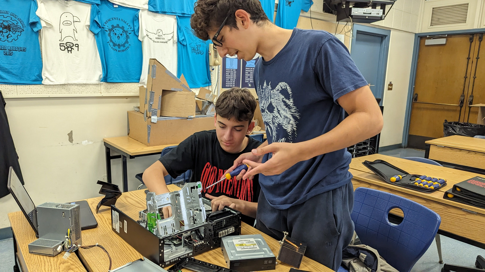

8/25/23 - This week I made this website and leared how to upload it to the internet. I learned about the saftey precautions and engineering steps. We tried to roll a marble into a cup. I dont know what I am doing this weekend.
My Favorite Recipe
9/1/23 - This week I learned engineering discipline and that you must be safe during dangerous processes. I was at a wedding this week and missed the challenge. I ate good food.

9/8/23 - My week went well. I learned about CAD and designed things. My rube goldberg machine will pop a balloon. The most challenging parts is the construction of the machine.

9/15/23 - This week we finished our project. It took a few tries for it to work successfully but overall it was good. We had multiple different challenges includng the car which would get stuck frequently. But overall it was a good chalenge and was fun.

9/22/23 - This week we did multiple challenges. We made a boat. We also cut out E shapes in paper and had to accuratley follow measurments.
9/28/23 - This week I learned about computer engineering. I learned about components of computers and got to take one apart. It was very informative and I learned alot about how computers fuctions and how the individual parts work together.

9/28/23 - I learned that there is different types of bioengineering, I also learned that bioengineering is made up of alot of different types of engineering. Our hand project was a very fun project, we were successful in making a prosthetic hand using strings and rubber bands. If I were to make the hand again I would add more fingers.